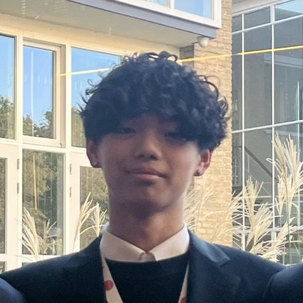

hyunjun yi
head of ai research, aiscend · seoul
hi! i'm hyunjun, a senior at seoul international school (class of 2027). i run ai research at aiscend.
most of what i work on asks the same question: what changes a language model's output that nobody bothers to report? the decoding sampler. one swapped word in an instruction. where a line breaks.
i also do analytic number theory, and i'm a competition director of yimo, a free online math olympiad sponsored by hudson river trading and art of problem solving. 2,900 registrations across its first two contests, over $2,500 given out in prizes, no entry fee.
selected work
restored lines
strip the line breaks off a poem and ask a model to put them back. claude opus 5 recovers 70 percent of the enjambments that syntax alone predicts at 13 percent. asked to write free verse of its own, it produces those breaks at half the human rate. it can hear the resistance. it does not perform it.
erasure
one operator, delete, and one changed word in the instruction. told the remainder should be a summary, opus 5 protects proper nouns harder than any other word class. told it should be a poem, it cuts them hardest. that single word moves the proper noun by 1.43 log-odds.
[re] limited fourier inductive bias in litefno
a from-scratch reproduction of a lightweight fourier neural operator, plus the parameter-matched cnn ablation the original paper skipped. the cnn matches or beats it. the fourier advantage does not show up at this scale.